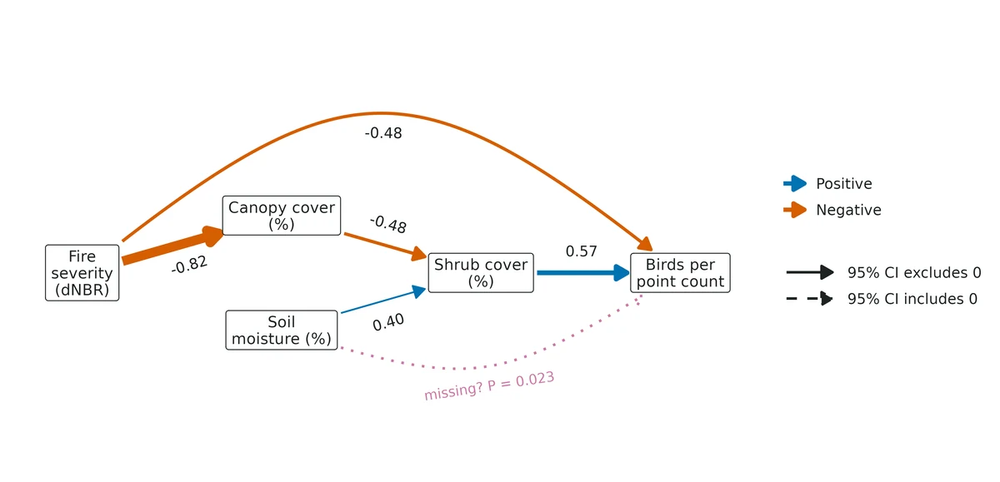
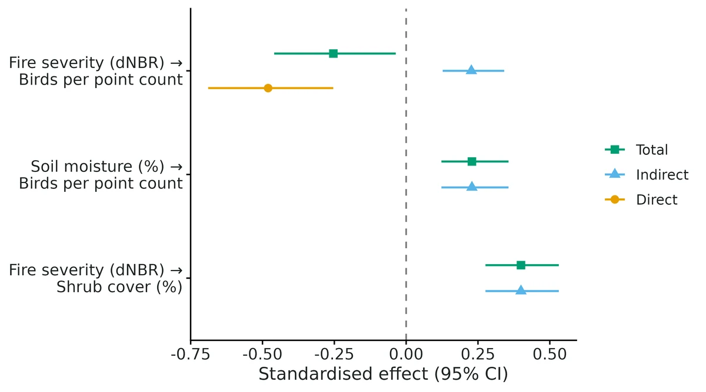
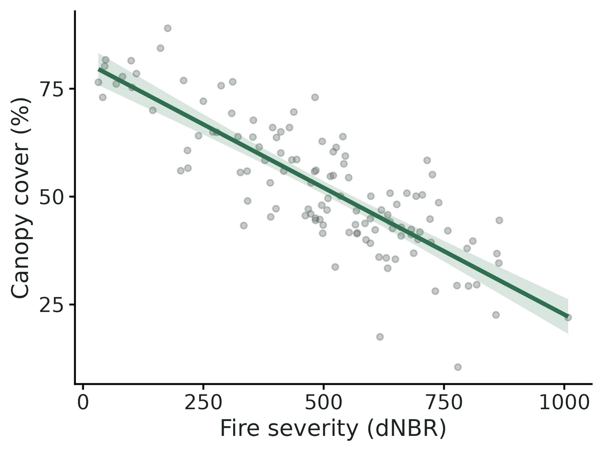
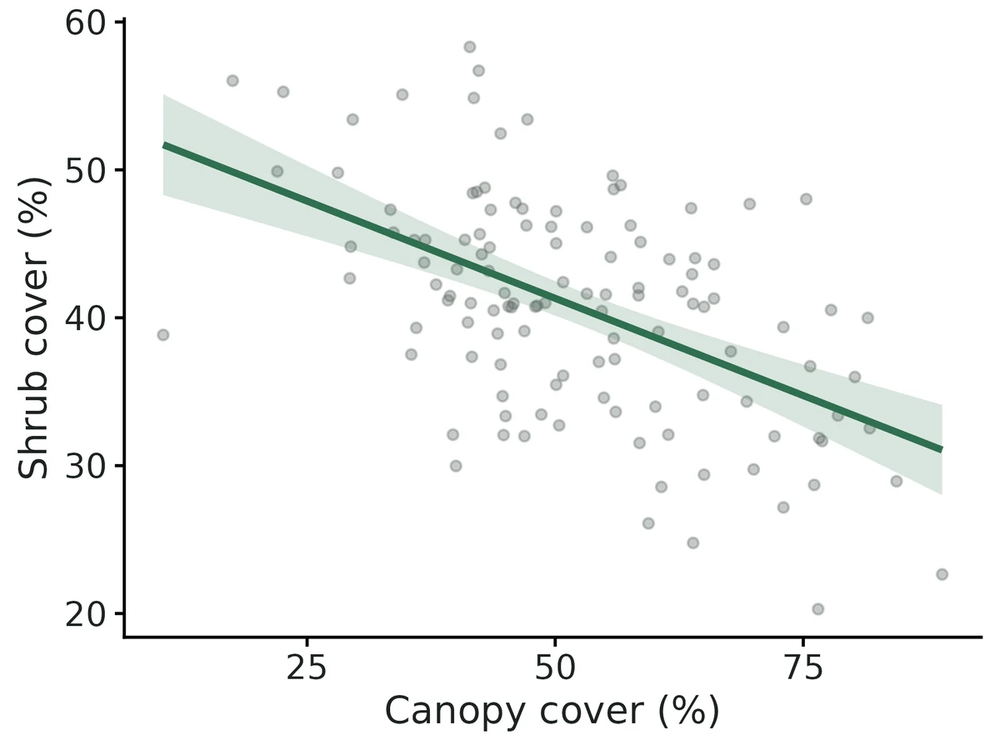

Structural equation models (piecewise SEM and lavaan)
"How does X affect Y, and how much of that goes through M?" when you have a diagram of hypothesised causal links among measured variables. For example: fire severity reduces canopy cover; less canopy lets shrubs grow; shrubs support more birds; fire may also reduce birds directly. An SEM fits every arrow at once, tests whether the arrows you left out are really unnecessary, and splits the association of fire with birds into a direct part and an indirect part (through canopy and shrubs).
Is this the right analysis?
Use it when
Several measured variables on the same sampling units (plots, sites, lakes, animals) are thought to influence each other as a network (e.g. fire -> canopy -> shrubs -> birds), and the question is which links the data support, how strong each direct path is, and how much of a driver's association with an outcome runs indirectly through mediators. Piecewise engine for count / binary / Gaussian responses and random site intercepts; lavaan engine for latent variables measured by several indicators, multigroup comparisons and correlated errors.
Not for
A single response with several predictors and no mediators (use glm); estimating one causal effect of an exposure with confounder adjustment (use causal); imperfect detection (occupancy / N-mixture modules; an SEM on raw counts treats detection as part of abundance); feedback loops (A -> B -> A) or time-series dynamics; interactions or nonlinear (spline) paths; very small samples (< ~30 units, or fewer than ~10 units per estimated coefficient in a component).
The data you need
One CSV, one row per sampling unit, with a numeric column for every variable in the diagram (counts as whole numbers, presence as 0/1), optional grouping column (site / burn unit) for random intercepts or for a multigroup comparison.
What the example's main data file looks like:
| plot_id | burn_unit | survey_date | fire_severity_dnbr | canopy_cover_pct | soil_moisture_pct | shrub_cover_pct | bird_detections |
|---|---|---|---|---|---|---|---|
| P001 | BU01 | 2025-05-24 | 732 | 28.1 | 19.2 | 47.9 | 2 |
| P002 | BU01 | 2025-06-04 | 633 | 33.4 | 23.3 | 48.1 | 7 |
| P003 | BU01 | 2025-06-06 | 468 | 47.1 | 16.4 | 42.5 | 7 |
| P004 | BU01 | 2025-06-05 | 484 | 56.1 | 22.8 | 34.1 | 5 |
| P005 | BU01 | 2025-05-27 | 401 | 47.2 | 30.6 | 59 | 11 |
Not sure? Use the finder to compare modules.
The worked example
Fire severity, vegetation and songbirds after a wildfire (piecewise SEM with a Poisson GLMM; simulated data with known truth)
The question: How does wildfire severity affect breeding songbird detections, directly and indirectly through canopy loss and shrub regrowth, and does soil moisture affect birds through shrubs?
The data are simulated, so the true answer is known and the analysis can be checked against it.
What the researcher typed
I have a CSV of 120 forest plots from 12 burn units after a wildfire (burned_forest_plots.csv). For each plot I have fire severity (dNBR), canopy cover, soil moisture, shrub cover and the number of birds detected in one point count. I think fire reduces canopy, less canopy means more shrubs, more shrubs means more birds, wetter soil means more shrubs, and fire might also reduce birds directly. Can you test this diagram, tell me how strong each link is, and how much of the fire effect on birds goes through the vegetation? Plots in the same burn unit are not independent. Please give me a report and figures for a paper.
Run it yourself
Download the example data below and unzip it.
Open the unzipped folder in Claude Code (see Install).
Paste the prompt above. The agent checks the files, writes a plan, runs planted truth, fits the model and writes the report. You can compare your results with the ones below.
Contains burned_forest_plots.csv, the settings file (config.yaml), a description of the data and a step-by-step walkthrough.
Study design details
| n plots | 120 |
|---|---|
| n burn units | 12 |
| plots per unit | 10 |
| point counts per plot | 1 |
| n variables | 5 |
| components | canopy ~ fire (Gaussian); shrub ~ canopy + moisture (Gaussian); birds ~ shrub + fire + (1|burn_unit) (Poisson, log) |
| engine | piecewise (lm, lme4::glmer) |
| ci method | Monte Carlo, 4000 draws |
| survey window | 2025-05-20 to 2025-06-14 |
Results from the example data

What this means
- Global fit: Fisher's C = 11.06 (df = 8), P = 0.198: no evidence that the model leaves out a needed link. This supports, but does not prove, the causal structure drawn.
- Fire severity -> canopy cover: an increase of 100 dNBR is associated with a difference of -5.87 (95% CI -6.61 to -5.14) % canopy cover.
- Canopy cover -> shrub cover: an increase of 10 % canopy is associated with a difference of -2.63 (95% CI -3.41 to -1.85) % shrub cover.
- Soil moisture -> shrub cover: an increase of 5 % moisture is associated with a difference of 3.29 (95% CI 2.12 to 4.45) % shrub cover.
- Shrub cover -> bird detections: an increase of 10 % shrub is associated with expected bird detections multiplied by 1.33 (95% CI 1.20 to 1.47; +33%).
- Fire severity -> bird detections (direct): an increase of 100 dNBR is associated with expected bird detections multiplied by 0.91 (95% CI 0.87 to 0.95; -9%).
- Per 1-SD increase in fire severity (212 dNBR), the indirect route alone multiplies expected bird detections by 1.10 (95% CI 1.05 to 1.15); the total association corresponds to x0.90 (95% CI 0.83 to 0.99). Direct and indirect associations have opposite signs and partly cancel; a weak total does not mean the driver has little influence.
- Soil moisture affects birds only indirectly through shrubs: x1.10 (95% CI 1.05 to 1.16) per 1 SD (5.02 %) of moisture.
- Bird counts mix abundance with detectability; the SEM cannot separate an effect on birds from an effect on detecting them.
- Paths are associations unless the diagram is causally complete; passing the d-sep test does not prove it.
More figures



Figures are the module's default publication figures, reduced for the web. The report also saves them as PDF and full-resolution PNG.
Planted truth at the example's design
Before trusting the example's results, the module was run on many simulated data sets with the same design and known true values. Each row is one quantity: did the method get it back? (What the thresholds are.)
What OPEN means here. The module works (it passes at its default design), but at this example's design not every quantity passed the planted-truth check, so CascadiaTools does not certify those. 18 of the 24 quantities checked passed outright. For std direct fire severity dnbr to bird detections, std fire severity dnbr to bird detections, std indirect fire severity dnbr to bird detections, std indirect soil moisture pct to bird detections and others, the estimate was biased (by up to 18%); don't interpret those at this design. The quantities that passed can be used as reported. With your own data, the report would say the same and suggest what would help: more data, a simpler model or a different estimator. More on DONE and OPEN.
Why, for this example:
Planted-truth gate FAILED 6/24 at this design: standardised coefficients involving the Poisson GLMM bird component are inflated by about +17% (coverage of std shrub -> birds 0.880). Cause: the observation-empirical scaling sd(eta)/cor(y, fitted) uses fitted values that include the 12 burn-unit BLUPs, inflating cor (0.664 vs 0.623); fixed-only fitted values give +2.2%. Matches piecewiseSEM::coefs(); VALIDATION.md Known limit 3 (reported there as ~+7%). Report raw paths, rate ratios and effects in original units; use standardised bird values only to rank routes.
| This example | 120 burned plots in 12 burn units, one point count each, birds as Poisson with a burn-unit random effect |
|---|---|
| Design the module was validated at | 100 plots, Poisson bird counts without a random effect |
The example has more plots than the default (120 vs 100) but adds a burn-unit random effect on the bird counts, which matches a separately validated design (120 plots, 12 sites) that passed 24 of 24 checks with standardised count paths biased by up to 8.1%. At the example's own design, standardised coefficients involving birds were inflated by about +17% and the gate failed 6 of 24, so raw paths and effects in original units should be reported rather than standardised bird values.
18 of 24 rows pass.
Show the full recovery table (24 rows)
| Quantity | True value | Average estimate | Bias | Allowed bias | Coverage (needed) | Result |
|---|---|---|---|---|---|---|
| direct_fire_severity_dnbr_to_bird_detections | -0.0006 | -0.000616 | -2.6% | ±10.0% | 0.97 (0.904) | ✓ PASS |
| indirect_fire_severity_dnbr_to_bird_detections | 0.000481 | 0.000496 | +3.1% | ±10.0% | 0.94 (0.904) | ✓ PASS |
| indirect_fire_severity_dnbr_to_shrub_cover_pct | 0.0192 | 0.0192 | -0.2% | ±10.0% | 0.97 (0.904) | ✓ PASS |
| indirect_soil_moisture_pct_to_bird_detections | 0.015 | 0.0156 | +3.7% | ±10.0% | 0.95 (0.904) | ✓ PASS |
| path_canopy_cover_pct_to_shrub_cover_pct | -0.35 | -0.352 | -0.6% | ±10.0% | 0.95 (0.904) | ✓ PASS |
| path_fire_severity_dnbr_to_bird_detections | -0.0006 | -0.000616 | -2.6% | ±10.0% | 0.97 (0.904) | ✓ PASS |
| path_fire_severity_dnbr_to_canopy_cover_pct | -0.055 | -0.0546 | +0.7% | ±10.0% | 0.95 (0.904) | ✓ PASS |
| path_shrub_cover_pct_to_bird_detections | 0.025 | 0.0259 | +3.4% | ±10.0% | 0.94 (0.904) | ✓ PASS |
| path_soil_moisture_pct_to_shrub_cover_pct | 0.6 | 0.602 | +0.3% | ±10.0% | 0.97 (0.904) | ✓ PASS |
| std_canopy_cover_pct_to_shrub_cover_pct | -0.578 | -0.581 | -0.4% | ±10.0% | 0.99 (0.904) | ✓ PASS |
| std_direct_fire_severity_dnbr_to_bird_detections | -0.266 | -0.311 | -17.0% | ±10.0% | 0.94 (0.904) | ✗ FAIL |
| std_fire_severity_dnbr_to_bird_detections | -0.266 | -0.311 | -17.0% | ±10.0% | 0.94 (0.904) | ✗ FAIL |
| std_fire_severity_dnbr_to_canopy_cover_pct | -0.814 | -0.809 | +0.7% | ±10.0% | 1 (0.904) | ✓ PASS |
| std_indirect_fire_severity_dnbr_to_bird_detections | 0.213 | 0.25 | +17.4% | ±10.0% | 0.94 (0.904) | ✗ FAIL |
| std_indirect_fire_severity_dnbr_to_shrub_cover_pct | 0.471 | 0.47 | -0.3% | ±10.0% | 0.99 (0.904) | ✓ PASS |
| std_indirect_soil_moisture_pct_to_bird_detections | 0.146 | 0.171 | +17.6% | ±10.0% | 0.96 (0.904) | ✗ FAIL |
| std_shrub_cover_pct_to_bird_detections | 0.453 | 0.532 | +17.4% | ±10.0% | 0.88 (0.904) | ✗ FAIL |
| std_soil_moisture_pct_to_shrub_cover_pct | 0.322 | 0.322 | +0.2% | ±10.0% | 0.96 (0.904) | ✓ PASS |
| std_total_fire_severity_dnbr_to_bird_detections | -0.0526 | -0.0608 | -15.5% | ±36.5%† | 0.98 (0.904) | ✓ PASS |
| std_total_fire_severity_dnbr_to_shrub_cover_pct | 0.471 | 0.47 | -0.3% | ±10.0% | 0.99 (0.904) | ✓ PASS |
| std_total_soil_moisture_pct_to_bird_detections | 0.146 | 0.171 | +17.6% | ±10.0% | 0.96 (0.904) | ✗ FAIL |
| total_fire_severity_dnbr_to_bird_detections | -0.000119 | -0.00012 | -0.8% | ±31.8%† | 0.98 (0.904) | ✓ PASS |
| total_fire_severity_dnbr_to_shrub_cover_pct | 0.0192 | 0.0192 | -0.2% | ±10.0% | 0.97 (0.904) | ✓ PASS |
| total_soil_moisture_pct_to_bird_detections | 0.015 | 0.0156 | +3.7% | ±10.0% | 0.95 (0.904) | ✓ PASS |
Limits that matter
- Planted-truth gate FAILED 6/24 at this design: standardised coefficients involving the Poisson GLMM bird component are inflated by about +17% (coverage of std shrub -> birds 0.880). Cause: the observation-empirical scaling sd(eta)/cor(y, fitted) uses fitted values that include the 12 burn-unit BLUPs, inflating cor (0.664 vs 0.623); fixed-only fitted values give +2.2%. Matches piecewiseSEM::coefs(); VALIDATION.md Known limit 3 (reported there as ~+7%). Report raw paths, rate ratios and effects in original units; use standardised bird values only to rank routes.
- Omitted paths or unmeasured confounders bias indirect effects (~-42% in the negative control); d-sep detects an omitted path of standardised size ~0.3 only 73% of the time at n = 100 (Known limit 5).
- Counts mix abundance and detectability (README not_for); use N-mixture/occupancy with repeat visits to separate them.
- Interactions, nonlinear paths and feedback loops are not supported (Known limit 6).
- Total fire -> birds has only 9% power at this design because direct and indirect routes nearly cancel; in this data set its 95% CI (-0.00090 to -0.00007) misses the true -0.00012, as does canopy -> shrub (CI -0.341 to -0.185 vs truth -0.35): 7 of 9 raw intervals contain the truth.
- Single d-sep claims can be false alarms: moisture -> birds P = 0.023 although no such link exists in the truth.
All known limits from the module's validation record
- Binary outcome at small n (n = 40) FAILS the bias gate for the unstandardised logit path shrub -> birds (+16.9%, bias MCSE 0.03) and the unstandardised indirect fire -> birds (+15.2%). This is the known small-sample upward bias of logistic ML. Coverage was fine (0.910-0.985 across all 24 estimands), and all standardised (latent-theoretic) estimands passed (|bias| <= 9.3%). Advice: report standardised effects and their CIs, or use >= ~100 units for binary outcomes. Not fixed (Firth-type bias reduction is not implemented).
- lavaan latent model at n = 60: one estimand (std_fertility_to_biomass) had coverage 0.900 against a 0.904 bound (bias -0.4%). Intervals for standardised lavaan parameters may be slightly narrow at small n (one borderline cell, so this is weak evidence). All raw paths, loadings and indirect effects passed.
- Standardised count coefficients with a random intercept (observation-empirical scaling) are biased by about +7% (inside the gate). The scaling uses cor(y, mu-hat), which depends on whether mu-hat includes the random effect; the module follows piecewiseSEM (matches
coefs()to 5e-5). Unstandardised paths are unbiased. - Unstandardised indirect effects through non-Gaussian mediators are not well-defined (products mix link scales). The module warns, and only standardised indirect effects should be compared. Count (Poisson) and binary (logit) mediators were recovery-tested at n = 150 (added 2026-10-19, both PASS 24/24): the module recovers the planted products and the standardised indirect effects, but the products themselves remain hard to interpret on the response scale.
- Omitted paths / unmeasured confounders bias indirect effects strongly (-42% in the negative control). The d-sep test catches this omission only 30% of the time at n = 40 and 73% at n = 100.
- Not supported: interactions or nonlinear paths, feedback loops, imperfect detection, lavaan with categorical (ordinal) endogenous variables (not validated), multigroup piecewise. Multigroup lavaan was cross-checked against separate fits (identical), but not recovery-tested.
- The bootstrap CI recovery used 300 resamples and nsim = 100 (time). Coverage 0.90-0.99.
How this module was validated
- 200 simulated data sets per design (likelihood fits, every replicate converged); the default design passed all 24 quantities with bias within 2.9% and coverage (how often the 95% interval contained the truth) 0.935-0.980.
- Other designs passed 24 of 24: random-intercept counts, negative binomial counts, a latent-variable lavaan model, and count or binary mediators; delta-method and bootstrap intervals also passed.
- Harder designs failed narrowly: a binary outcome at 40 plots (+16.9% and +15.2% bias on two paths) and a latent model at 60 plots (one coverage of 0.900 against 0.904).
- Negative control: omitting a true path biased indirect effects by -41.6% and failed the gate; the d-separation test detected the omission 73% of the time at 100 plots and 30% at 40 plots; with no true effect, rejection rates were 0.030-0.055.
- Cross-checked against lavaan (path coefficients identical to 2e-16), piecewiseSEM (standardised coefficients to 5e-5) and hand-written d-separation tests.
- Power: about 50 plots detect the direct and indirect fire effects; the weaker total fire effect needs about 200 plots.
- Two passes by a separate verifier agent with independent simulators passed new designs, confirmed the controls fail, reproduced the builder's numbers exactly, and fixed report text for non-Gaussian mediators.
Every run uses the acceptance gate described on the validation page. The full record follows, section by section, exactly as kept in the module's VALIDATION.md.
Settings and pass/fail rule used for every run
Status: default design PASSES the acceptance gate (all 24 estimands, 200 replicates). Two harder designs each have a documented failure (see "Known limits"). The negative control fails the gate as intended.
All runs use fast_settings (Monte Carlo CIs with 2,000 draws, d-sep on). These are likelihood fits, not MCMC, so "converged" means the optimiser reported convergence (and, for lavaan, an admissible solution); R-hat does not apply. Every replicate in every run converged (0 failures).
Reproduce: bin/ejob -c 16 -m 32 -t 4:00:00 -l logs/sem_validation2.log -- bash dev/sem/run_validation2.sh, then bin/Rscript dev/sem/dsep_conserve.R 1000 16, bash dev/sem/run_mediators.sh (count/binary mediator designs; code md5s in dev/sem/code_md5_mediators.txt) and bin/Rscript dev/sem/validation_tables.R. Outputs are in results/sem/validation/. Code version: md5s in dev/sem/code_md5_validation.txt. After these runs only output.R changed, and only in figure code (panel theme, path-diagram legend, a caption sentence). Estimates are unaffected.
Gate (core recovery_gate): |bias| <= max(10% of |truth|, 3 x bias MCSE); when truth = 0, |bias| <= max(0.1 x empirical SD, 3 x bias MCSE). Coverage of the 95% interval must be at least the binomial lower bound for nsim (0.904 at nsim = 200; 0.885 at nsim = 100), and at least 90% of replicates must converge.
Default design (gate: PASS 24/24)
Burned-forest path model, n = 100 plots: fire -> canopy (-0.6), canopy -> shrub (-0.5), moisture -> shrub (0.4), shrub -> birds (0.4, Poisson log link), fire -> birds (-0.25). Gaussian residual SD 1. Estimands: unstandardised paths (link scale), standardised paths (piecewiseSEM conventions), and direct, indirect and total effects (raw and standardised) for fire -> birds, moisture -> birds and fire -> shrub. Truth for standardised quantities comes from a 200,000-row simulation.
Summary (full table below): |relative bias| <= 2.9% for all 24 estimands; coverage 0.935-0.980. Indirect fire -> birds: truth 0.120, mean 0.1198, coverage 0.945. Indirect moisture -> birds: truth 0.160, mean 0.157, coverage 0.960. Median fit time 0.5 s.
Same design, other interval methods (both PASS 24/24):
- delta method (nsim 200): coverage 0.935-0.980; indirect fire -> birds 0.945.
- nonparametric bootstrap, 300 resamples (nsim 100): coverage 0.900-0.990 (bound 0.885).
Other designs
| design | n | nsim | gate | notes |
|---|---|---|---|---|
| GLMM: Poisson birds with random site intercept (12 sites, RE SD 0.4) | 120 | 200 | PASS 24/24 | standardised count paths biased by up to 8.1% (inside the 10% gate; see Known limits) |
| Negative binomial counts (theta = 2) | 100 | 200 | PASS 24/24 | coverage 0.910-0.980 |
| lavaan latent variable (fertility measured by 3 indicators -> biomass -> richness, plus grazing) | 150 | 200 | PASS 24/24 | coverage 0.915-1.00 (fixed loading = 1) |
Count MEDIATOR: shrub stems Poisson -> birds Poisson (count_mediator.yaml) | 150 | 200 | PASS 24/24 | abs. rel. bias <= 1.3%, coverage 0.910-0.985 |
Binary MEDIATOR: shrub present/absent (logit) -> birds Poisson (binary_mediator.yaml) | 150 | 200 | PASS 24/24 | logit paths into the mediator +5-6.5% (ML small-sample bias); standardised abs. rel. bias <= 3.5%; total fire -> birds truth -0.01, so its +85% relative bias is 0.009 absolute, within 3 MCSE; coverage 0.935-1.00 |
| HARDER: binary outcome (logit), n = 40 | 40 | 200 | FAIL 2/24 | path_shrub_to_birds +16.9% bias, indirect_fire_to_birds +15.2% |
| HARDER: lavaan latent, n = 60 | 60 | 200 | FAIL 1/24 | std_fertility_to_biomass coverage 0.900 (bound 0.904); bias -0.4% |
Negative control: omitted path (the gate CAN fail)
Data generated WITH a direct fire -> shrub path (0.4) and fitted WITHOUT it (n = 100, nsim 200):
| estimand | truth | mean est | rel. bias | coverage | gate |
|---|---|---|---|---|---|
| indirect fire -> birds | 0.280 | 0.163 | -41.6% | 0.275 | FAIL |
| indirect fire -> shrub | 0.300 | 0.408 | +35.9% | 0.740 | FAIL |
| canopy -> shrub | -0.500 | -0.671 | -34.3% | 0.525 | FAIL |
| total fire -> shrub | 0.700 | 0.408 | -41.7% | 0.205 | FAIL |
| total fire -> birds | 0.030 | -0.091 | sign flipped | 0.465 | FAIL |
Paths not involved in the omission (fire -> canopy, shrub -> birds, fire -> birds, moisture -> shrub) still pass (|bias| <= 1.7%, coverage 0.935-0.965). The omission biases the canopy -> shrub path (canopy absorbs the fire effect) and every indirect or total effect through it.
The d-separation test detects the omission (dsep_rates.csv, 1,000 replicates each):
| scenario | n | Fisher's C rejects (P < 0.05) | MCSE | fire-shrub claim P < 0.05 |
|---|---|---|---|---|
| true model, default (Poisson) | 100 | 0.062 | 0.008 | 0.044 |
| true model, binary outcome | 40 | 0.041 | 0.006 | 0.052 |
| true model, GLMM Poisson | 120 | 0.061 | 0.008 | 0.051 |
| true model, NB counts | 100 | 0.060 | 0.008 | 0.044 |
| omitted fire -> shrub | 40 | 0.295 | 0.014 | 0.497 |
| omitted fire -> shrub | 100 | 0.728 | 0.014 | 0.923 |
| omitted fire -> shrub | 200 | 0.975 | 0.005 | 0.997 |
So Fisher's C holds about its nominal 5% size on true models (0.041-0.062) and detects an omitted path of standardised size ~0.3 in 73% of datasets at n = 100. At n = 40 it detects it in only 30%. The single claim aimed at the omitted link has more power than the global C, which dilutes it across 4 claims. "At least one claim P < 0.05" happens in 18-20% of true-model datasets, so single claims must not be over-read (the report says this).
d-sep claim direction (causal vs piecewiseSEM conserve). In all designs above piecewiseSEM's basis set contained no duplicated claims, so both options gave identical tests (rows identical in dsep_rates.csv). dev/sem/dsep_conserve.R uses a design where a claim IS duplicated (x -> m -> y1 Poisson, x -> y2 binary, y1 and y2 unlinked; 1,000 replicates; dsep_conserve.csv). True-model rejection: n = 60, causal 0.056 vs conserve 0.061; n = 150, both 0.058 (MCSE ~0.007). No meaningful size inflation from conserve here.
False-positive rate (effect = 0)
Default design with fire -> birds = 0 and moisture -> shrub = 0, so indirect moisture -> birds = 0 (nsim 200):
| estimand (truth 0) | mean est | coverage | rejection rate (should be ~0.05) |
|---|---|---|---|
| path fire -> birds | -0.005 | 0.945 | 0.055 |
| path moisture -> shrub | -0.008 | 0.955 | 0.045 |
| indirect moisture -> birds | -0.003 | 0.970 | 0.030 |
All 24 estimands pass the gate. The indirect test is conservative (0.03) because a product of two coefficients, one of which is zero, has a heavy-tailed, peaked distribution (expected for a product of coefficients).
Cross-checks against independent implementations
dev/sem/crosscheck.R -> results/sem/validation/crosscheck.csv, crosscheck_ci_methods.csv, crosscheck.log.
| check | max abs difference |
|---|---|
| A. All-Gaussian model: piecewise engine (lm per component) vs lavaan joint ML, path coefficients (n = 200) | 2e-16 |
A. Indirect and total effect fire -> birds, piecewise vs lavaan := | 1e-16 |
| A. SEs: lm t-based vs lavaan ML (expected ratio sqrt(n/(n-p))) | 6e-4 (0.06-0.8% relative) |
| A. Standardised: ours (sample SD) vs lavaan std.all (model-implied SD) | 0.003 |
A. Indirect SE: our lavaan-engine delta method vs lavaan's own := delta | 3e-13 |
| A. Shipley-Douma chi-square for the piecewise model vs lavaan chi-square | identical: 1.349, df 4 |
B. Standardised coefficients vs piecewiseSEM::coefs() (Gaussian, Poisson, NB, binary logit, Poisson GLMM) | 5e-5 (piecewiseSEM rounds to 4 dp) |
B2. Fisher's C (conserve) vs piecewiseSEM::fisherC() (4 designs) | 2e-4 (rounding) |
| C. Hand-written d-sep (lm partial t-tests, Shipley 2000) vs module; Fisher's C and P | 4e-15 |
| C2. Same for the Poisson model, causal direction (hand-written glm) | 9e-15 |
| E. lavaan multigroup vs separate per-group lavaan fits: paths and indirect effects | 6e-17 |
| F. Latent model, indirect-effect 95% limits: module Monte Carlo vs lavaan bootstrap (1,000) / delta | 0.004-0.043 (CI widths ~0.6-0.8) |
| D. Example data: Monte Carlo vs delta vs bootstrap intervals | e.g. std indirect fire -> birds: MC 0.127-0.341, delta 0.119-0.335, bootstrap 0.113-0.309 |
Power (design knob: number of plots)
power sem --vary n=30,50,75,100,150,200 --nsim 100 (default effects; results/sem/validation/power_n/). Power = share of 95% intervals excluding 0; coverage in brackets.
| n | fire -> birds (direct) | moisture -> shrub | indirect fire -> birds | indirect moisture -> birds | total fire -> birds |
|---|---|---|---|---|---|
| 30 | 0.73 (0.97) | 0.52 (0.89) | 0.76 (0.96) | 0.52 (0.91) | 0.23 (0.94) |
| 50 | 0.96 (0.96) | 0.80 (0.98) | 0.95 (0.96) | 0.78 (0.97) | 0.40 (0.97) |
| 75 | 0.99 (0.97) | 0.90 (0.87) | 0.99 (0.94) | 0.88 (0.93) | 0.48 (0.97) |
| 100 | 1.00 (0.96) | 0.97 (0.95) | 0.99 (0.98) | 0.97 (0.95) | 0.60 (0.96) |
| 150 | 1.00 (0.93) | 1.00 (0.93) | 1.00 (0.94) | 1.00 (0.95) | 0.82 (0.91) |
| 200 | 1.00 (0.95) | 1.00 (0.93) | 1.00 (0.95) | 1.00 (0.93) | 0.93 (0.91) |
Reading: about 50 plots detect the direct and indirect fire effects, and about 100 detect the weaker moisture route. The total fire effect is small because direct and indirect partly cancel (-0.25 + 0.12), so it needs ~200 plots. Single coverages of 0.87-0.89 at nsim = 100 are within Monte Carlo error of 0.95 for one cell out of 30 (binomial 95% lower bound 0.89).
Example fit check
results/sem/example/sem_report.html (120 plots, Poisson GLMM birds) was read by hand. Every interpretation sentence matches the table. Examples: -0.0587 x 212 (1 SD of dNBR) = -12.4 % canopy; exp(0.0286 x 8.18) = 1.26x birds per SD of shrub; exp(0.000442 x 212) = 1.10x for the indirect route; exp(-0.000494 x 212) = 0.90x total. Fisher's C = 11.06, df 8, P = 0.198. The one flagged claim (moisture -> birds, P = 0.023) appears in text and as a dotted arrow. Conditional-effects plots are on the response scale (expected detections for the Poisson component). The lavaan example (results/sem/example_lavaan/) reports chi-square/CFI/RMSEA/SRMR, loadings, and the latent box shaded in the diagram.
Full recovery tables
bootstrap_ci (nsim = 100, failed = 0, converged = 100)
| estimand | truth | mean est | rel. bias % | bias MCSE | coverage | power | gate |
|---|---|---|---|---|---|---|---|
| direct_fire_to_birds | -0.25 | -0.2538 | -1.5 | 0.0048 | 0.900 | - | PASS |
| indirect_fire_to_birds | 0.12 | 0.1208 | 0.6 | 0.003 | 0.960 | 1.000 | PASS |
| indirect_fire_to_shrub | 0.3 | 0.3012 | 0.4 | 0.0071 | 0.950 | - | PASS |
| indirect_moisture_to_birds | 0.16 | 0.1567 | -2.1 | 0.0044 | 0.960 | 0.970 | PASS |
| path_canopy_to_shrub | -0.5 | -0.4991 | 0.2 | 0.0093 | 0.940 | - | PASS |
| path_fire_to_birds | -0.25 | -0.2538 | -1.5 | 0.0048 | 0.930 | 1.000 | PASS |
| path_fire_to_canopy | -0.6 | -0.6037 | -0.6 | 0.0088 | 0.990 | 1.000 | PASS |
| path_moisture_to_shrub | 0.4 | 0.389 | -2.8 | 0.0099 | 0.960 | 0.960 | PASS |
| path_shrub_to_birds | 0.4 | 0.402 | 0.5 | 0.0039 | 0.960 | 1.000 | PASS |
| std_canopy_to_shrub | -0.4753 | -0.473 | 0.5 | 0.0078 | 0.960 | - | PASS |
| std_direct_fire_to_birds | -0.387 | -0.3867 | 0.1 | 0.0069 | 0.940 | - | PASS |
| std_fire_to_birds | -0.387 | -0.3867 | 0.1 | 0.0069 | 0.950 | - | PASS |
| std_fire_to_canopy | -0.5148 | -0.5148 | 0.0 | 0.0073 | 0.970 | - | PASS |
| std_indirect_fire_to_birds | 0.1858 | 0.1848 | -0.5 | 0.0048 | 0.960 | - | PASS |
| std_indirect_fire_to_shrub | 0.2447 | 0.2436 | -0.4 | 0.0055 | 0.940 | - | PASS |
| std_indirect_moisture_to_birds | 0.2486 | 0.2406 | -3.2 | 0.0064 | 0.960 | - | PASS |
| std_moisture_to_shrub | 0.3275 | 0.3173 | -3.1 | 0.0074 | 0.980 | - | PASS |
| std_shrub_to_birds | 0.7592 | 0.7553 | -0.5 | 0.0065 | 0.960 | - | PASS |
| std_total_fire_to_birds | -0.2012 | -0.2019 | -0.3 | 0.0084 | 0.930 | - | PASS |
| std_total_fire_to_shrub | 0.2447 | 0.2436 | -0.4 | 0.0055 | 0.940 | - | PASS |
| std_total_moisture_to_birds | 0.2486 | 0.2406 | -3.2 | 0.0064 | 0.960 | - | PASS |
| total_fire_to_birds | -0.13 | -0.133 | -2.3 | 0.0058 | 0.940 | 0.660 | PASS |
| total_fire_to_shrub | 0.3 | 0.3012 | 0.4 | 0.0071 | 0.950 | - | PASS |
| total_moisture_to_birds | 0.16 | 0.1567 | -2.1 | 0.0044 | 0.960 | - | PASS |
Coverage bound 0.885. Median time per fit 5.7 s.
default (nsim = 200, failed = 0, converged = 200)
| estimand | truth | mean est | rel. bias % | bias MCSE | coverage | power | gate |
|---|---|---|---|---|---|---|---|
| direct_fire_to_birds | -0.25 | -0.2516 | -0.6 | 0.0033 | 0.940 | - | PASS |
| indirect_fire_to_birds | 0.12 | 0.1198 | -0.2 | 0.0022 | 0.945 | 1.000 | PASS |
| indirect_fire_to_shrub | 0.3 | 0.2991 | -0.3 | 0.0051 | 0.950 | - | PASS |
| indirect_moisture_to_birds | 0.16 | 0.1573 | -1.7 | 0.0032 | 0.960 | 0.935 | PASS |
| path_canopy_to_shrub | -0.5 | -0.4941 | 1.2 | 0.0063 | 0.935 | - | PASS |
| path_fire_to_birds | -0.25 | -0.2516 | -0.6 | 0.0033 | 0.935 | 1.000 | PASS |
| path_fire_to_canopy | -0.6 | -0.6053 | -0.9 | 0.0067 | 0.965 | 1.000 | PASS |
| path_moisture_to_shrub | 0.4 | 0.3917 | -2.1 | 0.0073 | 0.955 | 0.955 | PASS |
| path_shrub_to_birds | 0.4 | 0.4009 | 0.2 | 0.0028 | 0.940 | 1.000 | PASS |
| std_canopy_to_shrub | -0.4753 | -0.472 | 0.7 | 0.0055 | 0.945 | - | PASS |
| std_direct_fire_to_birds | -0.387 | -0.3861 | 0.2 | 0.0049 | 0.950 | - | PASS |
| std_fire_to_birds | -0.387 | -0.3861 | 0.2 | 0.0049 | 0.950 | - | PASS |
| std_fire_to_canopy | -0.5148 | -0.5158 | -0.2 | 0.0051 | 0.980 | - | PASS |
| std_indirect_fire_to_birds | 0.1858 | 0.1839 | -1.0 | 0.0033 | 0.950 | - | PASS |
| std_indirect_fire_to_shrub | 0.2447 | 0.2436 | -0.4 | 0.0038 | 0.965 | - | PASS |
| std_indirect_moisture_to_birds | 0.2486 | 0.2415 | -2.9 | 0.0047 | 0.950 | - | PASS |
| std_moisture_to_shrub | 0.3275 | 0.3202 | -2.2 | 0.0057 | 0.970 | - | PASS |
| std_shrub_to_birds | 0.7592 | 0.7522 | -0.9 | 0.0046 | 0.970 | - | PASS |
| std_total_fire_to_birds | -0.2012 | -0.2022 | -0.5 | 0.0059 | 0.950 | - | PASS |
| std_total_fire_to_shrub | 0.2447 | 0.2436 | -0.4 | 0.0038 | 0.965 | - | PASS |
| std_total_moisture_to_birds | 0.2486 | 0.2415 | -2.9 | 0.0047 | 0.950 | - | PASS |
| total_fire_to_birds | -0.13 | -0.1318 | -1.4 | 0.0039 | 0.965 | 0.625 | PASS |
| total_fire_to_shrub | 0.3 | 0.2991 | -0.3 | 0.0051 | 0.950 | - | PASS |
| total_moisture_to_birds | 0.16 | 0.1573 | -1.7 | 0.0032 | 0.960 | - | PASS |
Coverage bound 0.904. Median time per fit 0.5 s.
delta_ci (nsim = 200, failed = 0, converged = 200)
| estimand | truth | mean est | rel. bias % | bias MCSE | coverage | power | gate |
|---|---|---|---|---|---|---|---|
| direct_fire_to_birds | -0.25 | -0.2516 | -0.6 | 0.0033 | 0.935 | - | PASS |
| indirect_fire_to_birds | 0.12 | 0.1198 | -0.2 | 0.0022 | 0.945 | 1.000 | PASS |
| indirect_fire_to_shrub | 0.3 | 0.2991 | -0.3 | 0.0051 | 0.940 | - | PASS |
| indirect_moisture_to_birds | 0.16 | 0.1573 | -1.7 | 0.0032 | 0.950 | 0.950 | PASS |
| path_canopy_to_shrub | -0.5 | -0.4941 | 1.2 | 0.0063 | 0.935 | - | PASS |
| path_fire_to_birds | -0.25 | -0.2516 | -0.6 | 0.0033 | 0.935 | 1.000 | PASS |
| path_fire_to_canopy | -0.6 | -0.6053 | -0.9 | 0.0067 | 0.965 | 1.000 | PASS |
| path_moisture_to_shrub | 0.4 | 0.3917 | -2.1 | 0.0073 | 0.955 | 0.955 | PASS |
| path_shrub_to_birds | 0.4 | 0.4009 | 0.2 | 0.0028 | 0.940 | 1.000 | PASS |
| std_canopy_to_shrub | -0.4753 | -0.472 | 0.7 | 0.0055 | 0.945 | - | PASS |
| std_direct_fire_to_birds | -0.387 | -0.3861 | 0.2 | 0.0049 | 0.950 | - | PASS |
| std_fire_to_birds | -0.387 | -0.3861 | 0.2 | 0.0049 | 0.950 | - | PASS |
| std_fire_to_canopy | -0.5148 | -0.5158 | -0.2 | 0.0051 | 0.980 | - | PASS |
| std_indirect_fire_to_birds | 0.1858 | 0.1839 | -1.0 | 0.0033 | 0.950 | - | PASS |
| std_indirect_fire_to_shrub | 0.2447 | 0.2436 | -0.4 | 0.0038 | 0.965 | - | PASS |
| std_indirect_moisture_to_birds | 0.2486 | 0.2415 | -2.9 | 0.0047 | 0.935 | - | PASS |
| std_moisture_to_shrub | 0.3275 | 0.3202 | -2.2 | 0.0057 | 0.970 | - | PASS |
| std_shrub_to_birds | 0.7592 | 0.7522 | -0.9 | 0.0046 | 0.970 | - | PASS |
| std_total_fire_to_birds | -0.2012 | -0.2022 | -0.5 | 0.0059 | 0.955 | - | PASS |
| std_total_fire_to_shrub | 0.2447 | 0.2436 | -0.4 | 0.0038 | 0.965 | - | PASS |
| std_total_moisture_to_birds | 0.2486 | 0.2415 | -2.9 | 0.0047 | 0.935 | - | PASS |
| total_fire_to_birds | -0.13 | -0.1318 | -1.4 | 0.0039 | 0.960 | 0.655 | PASS |
| total_fire_to_shrub | 0.3 | 0.2991 | -0.3 | 0.0051 | 0.940 | - | PASS |
| total_moisture_to_birds | 0.16 | 0.1573 | -1.7 | 0.0032 | 0.950 | - | PASS |
Coverage bound 0.904. Median time per fit 0.1 s.
glmm_poisson (nsim = 200, failed = 0, converged = 200)
| estimand | truth | mean est | rel. bias % | bias MCSE | coverage | power | gate |
|---|---|---|---|---|---|---|---|
| direct_fire_to_birds | -0.25 | -0.2532 | -1.3 | 0.0034 | 0.970 | - | PASS |
| indirect_fire_to_birds | 0.12 | 0.1208 | 0.6 | 0.0021 | 0.965 | 1.000 | PASS |
| indirect_fire_to_shrub | 0.3 | 0.296 | -1.3 | 0.0044 | 0.965 | - | PASS |
| indirect_moisture_to_birds | 0.16 | 0.1635 | 2.2 | 0.0028 | 0.975 | 1.000 | PASS |
| path_canopy_to_shrub | -0.5 | -0.5026 | -0.5 | 0.0058 | 0.955 | - | PASS |
| path_fire_to_birds | -0.25 | -0.2532 | -1.3 | 0.0034 | 0.970 | 1.000 | PASS |
| path_fire_to_canopy | -0.6 | -0.5908 | 1.5 | 0.0064 | 0.955 | 1.000 | PASS |
| path_moisture_to_shrub | 0.4 | 0.4018 | 0.5 | 0.0063 | 0.970 | 1.000 | PASS |
| path_shrub_to_birds | 0.4 | 0.4073 | 1.8 | 0.0031 | 0.940 | 1.000 | PASS |
| std_canopy_to_shrub | -0.4753 | -0.477 | -0.4 | 0.0047 | 0.985 | - | PASS |
| std_direct_fire_to_birds | -0.3213 | -0.344 | -7.1 | 0.0048 | 0.930 | - | PASS |
| std_fire_to_birds | -0.3213 | -0.344 | -7.1 | 0.0048 | 0.925 | - | PASS |
| std_fire_to_canopy | -0.5148 | -0.5047 | 2.0 | 0.0047 | 0.970 | - | PASS |
| std_indirect_fire_to_birds | 0.1542 | 0.1635 | 6.0 | 0.0027 | 0.955 | - | PASS |
| std_indirect_fire_to_shrub | 0.2447 | 0.2406 | -1.7 | 0.0032 | 0.985 | - | PASS |
| std_indirect_moisture_to_birds | 0.2064 | 0.2217 | 7.4 | 0.0037 | 0.960 | - | PASS |
| std_moisture_to_shrub | 0.3275 | 0.3278 | 0.1 | 0.005 | 0.960 | - | PASS |
| std_shrub_to_birds | 0.6302 | 0.6767 | 7.4 | 0.005 | 0.910 | - | PASS |
| std_total_fire_to_birds | -0.1671 | -0.1805 | -8.1 | 0.0053 | 0.945 | - | PASS |
| std_total_fire_to_shrub | 0.2447 | 0.2406 | -1.7 | 0.0032 | 0.985 | - | PASS |
| std_total_moisture_to_birds | 0.2064 | 0.2217 | 7.4 | 0.0037 | 0.960 | - | PASS |
| total_fire_to_birds | -0.13 | -0.1324 | -1.9 | 0.0039 | 0.955 | 0.650 | PASS |
| total_fire_to_shrub | 0.3 | 0.296 | -1.3 | 0.0044 | 0.965 | - | PASS |
| total_moisture_to_birds | 0.16 | 0.1635 | 2.2 | 0.0028 | 0.975 | - | PASS |
Coverage bound 0.904. Median time per fit 1.0 s.
hard_small_binary (nsim = 200, failed = 0, converged = 200)
| estimand | truth | mean est | rel. bias % | bias MCSE | coverage | power | gate |
|---|---|---|---|---|---|---|---|
| direct_fire_to_birds | -0.5 | -0.5543 | -10.9 | 0.035 | 0.965 | - | PASS |
| indirect_fire_to_birds | 0.24 | 0.2766 | 15.2 | 0.011 | 0.940 | 0.535 | FAIL (bias) |
| indirect_fire_to_shrub | 0.3 | 0.3015 | 0.5 | 0.0089 | 0.915 | - | PASS |
| indirect_moisture_to_birds | 0.32 | 0.3731 | 16.6 | 0.018 | 0.945 | 0.390 | PASS |
| path_canopy_to_shrub | -0.5 | -0.4976 | 0.5 | 0.011 | 0.950 | - | PASS |
| path_fire_to_birds | -0.5 | -0.5543 | -10.9 | 0.035 | 0.955 | 0.240 | PASS |
| path_fire_to_canopy | -0.6 | -0.6073 | -1.2 | 0.013 | 0.910 | 0.915 | PASS |
| path_moisture_to_shrub | 0.4 | 0.396 | -1.0 | 0.012 | 0.950 | 0.675 | PASS |
| path_shrub_to_birds | 0.8 | 0.9351 | 16.9 | 0.03 | 0.985 | 0.715 | FAIL (bias) |
| std_canopy_to_shrub | -0.4753 | -0.4701 | 1.1 | 0.009 | 0.985 | - | PASS |
| std_direct_fire_to_birds | -0.2423 | -0.2338 | 3.5 | 0.013 | 0.970 | - | PASS |
| std_fire_to_birds | -0.2423 | -0.2338 | 3.5 | 0.013 | 0.955 | - | PASS |
| std_fire_to_canopy | -0.5148 | -0.5105 | 0.8 | 0.0092 | 0.970 | - | PASS |
| std_indirect_fire_to_birds | 0.1163 | 0.1195 | 2.7 | 0.0042 | 0.955 | - | PASS |
| std_indirect_fire_to_shrub | 0.2447 | 0.2411 | -1.5 | 0.0065 | 0.940 | - | PASS |
| std_indirect_moisture_to_birds | 0.1557 | 0.1616 | 3.8 | 0.0065 | 0.965 | - | PASS |
| std_moisture_to_shrub | 0.3275 | 0.3244 | -1.0 | 0.0092 | 0.945 | - | PASS |
| std_shrub_to_birds | 0.4753 | 0.4931 | 3.7 | 0.012 | 0.980 | - | PASS |
| std_total_fire_to_birds | -0.126 | -0.1143 | 9.3 | 0.013 | 0.965 | - | PASS |
| std_total_fire_to_shrub | 0.2447 | 0.2411 | -1.5 | 0.0065 | 0.940 | - | PASS |
| std_total_moisture_to_birds | 0.1557 | 0.1616 | 3.8 | 0.0065 | 0.965 | - | PASS |
| total_fire_to_birds | -0.26 | -0.2778 | -6.8 | 0.033 | 0.955 | 0.080 | PASS |
| total_fire_to_shrub | 0.3 | 0.3015 | 0.5 | 0.0089 | 0.915 | - | PASS |
| total_moisture_to_birds | 0.32 | 0.3731 | 16.6 | 0.018 | 0.945 | - | PASS |
Coverage bound 0.904. Median time per fit 0.5 s.
lavaan_latent (nsim = 200, failed = 0, converged = 200)
| estimand | truth | mean est | rel. bias % | bias MCSE | coverage | power | gate |
|---|---|---|---|---|---|---|---|
| direct_grazing_to_rich | 1.5 | 1.529 | 1.9 | 0.022 | 0.960 | - | PASS |
| indirect_fertility_to_rich | -0.72 | -0.7026 | 2.4 | 0.012 | 0.955 | - | PASS |
| indirect_grazing_to_rich | 0.48 | 0.4722 | -1.6 | 0.0088 | 0.960 | - | PASS |
| loading_fertility_om | 1 | 1 | 0.0 | 0 | 1.000 | - | PASS |
| loading_fertility_soilc | 0.7 | 0.7005 | 0.1 | 0.005 | 0.940 | - | PASS |
| loading_fertility_soiln | 0.6 | 0.608 | 1.3 | 0.0042 | 0.945 | - | PASS |
| path_biomass_to_rich | -0.8 | -0.7785 | 2.7 | 0.013 | 0.955 | - | PASS |
| path_fertility_to_biomass | 0.9 | 0.9037 | 0.4 | 0.0062 | 0.945 | - | PASS |
| path_grazing_to_biomass | -0.6 | -0.6069 | -1.1 | 0.0058 | 0.970 | - | PASS |
| path_grazing_to_rich | 1.5 | 1.529 | 1.9 | 0.022 | 0.955 | - | PASS |
| std_biomass_to_rich | -0.3231 | -0.3161 | 2.1 | 0.0049 | 0.940 | - | PASS |
| std_direct_grazing_to_rich | 0.3511 | 0.3589 | 2.2 | 0.0049 | 0.985 | - | PASS |
| std_fertility_to_biomass | 0.7424 | 0.7387 | -0.5 | 0.0027 | 0.960 | - | PASS |
| std_grazing_to_biomass | -0.3478 | -0.3507 | -0.9 | 0.0032 | 0.975 | - | PASS |
| std_grazing_to_rich | 0.3511 | 0.3589 | 2.2 | 0.0049 | 0.945 | - | PASS |
| std_indirect_fertility_to_rich | -0.2398 | -0.2338 | 2.5 | 0.0038 | 0.955 | - | PASS |
| std_indirect_grazing_to_rich | 0.1123 | 0.1107 | -1.5 | 0.0019 | 0.975 | - | PASS |
| std_loading_fertility_om | 0.8183 | 0.8172 | -0.1 | 0.0026 | 0.930 | - | PASS |
| std_loading_fertility_soilc | 0.8126 | 0.8117 | -0.1 | 0.0027 | 0.945 | - | PASS |
| std_loading_fertility_soiln | 0.7989 | 0.8032 | 0.5 | 0.0026 | 0.935 | - | PASS |
| std_total_fertility_to_rich | -0.2398 | -0.2338 | 2.5 | 0.0038 | 0.955 | - | PASS |
| std_total_grazing_to_rich | 0.4634 | 0.4696 | 1.3 | 0.0045 | 0.980 | - | PASS |
| total_fertility_to_rich | -0.72 | -0.7026 | 2.4 | 0.012 | 0.955 | - | PASS |
| total_grazing_to_rich | 1.98 | 2.001 | 1.1 | 0.022 | 0.915 | - | PASS |
Coverage bound 0.904. Median time per fit 0.7 s.
lavaan_latent_small (nsim = 200, failed = 0, converged = 200)
| estimand | truth | mean est | rel. bias % | bias MCSE | coverage | power | gate |
|---|---|---|---|---|---|---|---|
| direct_grazing_to_rich | 1.5 | 1.526 | 1.7 | 0.032 | 0.955 | - | PASS |
| indirect_fertility_to_rich | -0.72 | -0.7223 | -0.3 | 0.02 | 0.975 | - | PASS |
| indirect_grazing_to_rich | 0.48 | 0.462 | -3.7 | 0.015 | 0.965 | - | PASS |
| loading_fertility_om | 1 | 1 | 0.0 | 0 | 1.000 | - | PASS |
| loading_fertility_soilc | 0.7 | 0.72 | 2.9 | 0.0077 | 0.975 | - | PASS |
| loading_fertility_soiln | 0.6 | 0.6245 | 4.1 | 0.0069 | 0.955 | - | PASS |
| path_biomass_to_rich | -0.8 | -0.7862 | 1.7 | 0.019 | 0.955 | - | PASS |
| path_fertility_to_biomass | 0.9 | 0.919 | 2.1 | 0.01 | 0.960 | - | PASS |
| path_grazing_to_biomass | -0.6 | -0.5866 | 2.2 | 0.011 | 0.910 | - | PASS |
| path_grazing_to_rich | 1.5 | 1.526 | 1.7 | 0.032 | 0.955 | - | PASS |
| std_biomass_to_rich | -0.3231 | -0.3156 | 2.3 | 0.0073 | 0.955 | - | PASS |
| std_direct_grazing_to_rich | 0.3511 | 0.3548 | 1.1 | 0.0071 | 0.960 | - | PASS |
| std_fertility_to_biomass | 0.7424 | 0.7397 | -0.4 | 0.0047 | 0.900 | - | FAIL (coverage) |
| std_grazing_to_biomass | -0.3478 | -0.3398 | 2.3 | 0.0064 | 0.905 | - | PASS |
| std_grazing_to_rich | 0.3511 | 0.3548 | 1.1 | 0.0071 | 0.935 | - | PASS |
| std_indirect_fertility_to_rich | -0.2398 | -0.2339 | 2.5 | 0.0057 | 0.985 | - | PASS |
| std_indirect_grazing_to_rich | 0.1123 | 0.1071 | -4.6 | 0.0033 | 0.970 | - | PASS |
| std_loading_fertility_om | 0.8183 | 0.8131 | -0.6 | 0.0044 | 0.935 | - | PASS |
| std_loading_fertility_soilc | 0.8126 | 0.8113 | -0.2 | 0.0038 | 0.955 | - | PASS |
| std_loading_fertility_soiln | 0.7989 | 0.8039 | 0.6 | 0.0041 | 0.925 | - | PASS |
| std_total_fertility_to_rich | -0.2398 | -0.2339 | 2.5 | 0.0057 | 0.985 | - | PASS |
| std_total_grazing_to_rich | 0.4634 | 0.4619 | -0.3 | 0.0068 | 0.975 | - | PASS |
| total_fertility_to_rich | -0.72 | -0.7223 | -0.3 | 0.02 | 0.975 | - | PASS |
| total_grazing_to_rich | 1.98 | 1.988 | 0.4 | 0.033 | 0.955 | - | PASS |
Coverage bound 0.904. Median time per fit 0.7 s.
misspec_omitted_path (nsim = 200, failed = 0, converged = 200)
| estimand | truth | mean est | rel. bias % | bias MCSE | coverage | power | gate |
|---|---|---|---|---|---|---|---|
| direct_fire_to_birds | -0.25 | -0.2541 | -1.6 | 0.0041 | 0.940 | - | PASS |
| indirect_fire_to_birds | 0.28 | 0.1634 | -41.6 | 0.0029 | 0.275 | 1.000 | FAIL (bias, coverage) |
| indirect_fire_to_shrub | 0.3 | 0.4078 | 35.9 | 0.0065 | 0.740 | - | FAIL (bias, coverage) |
| indirect_moisture_to_birds | 0.16 | 0.1573 | -1.7 | 0.0032 | 0.945 | 0.920 | PASS |
| path_canopy_to_shrub | -0.5 | -0.6713 | -34.3 | 0.0066 | 0.525 | - | FAIL (bias, coverage) |
| path_fire_to_birds | -0.25 | -0.2541 | -1.6 | 0.0041 | 0.935 | 0.985 | PASS |
| path_fire_to_canopy | -0.6 | -0.6053 | -0.9 | 0.0067 | 0.965 | 1.000 | PASS |
| path_moisture_to_shrub | 0.4 | 0.3931 | -1.7 | 0.0076 | 0.955 | 0.940 | PASS |
| path_shrub_to_birds | 0.4 | 0.4004 | 0.1 | 0.003 | 0.945 | 1.000 | PASS |
| std_canopy_to_shrub | -0.4222 | -0.5692 | -34.8 | 0.0046 | 0.545 | - | FAIL (bias, coverage) |
| std_direct_fire_to_birds | -0.3931 | -0.3965 | -0.9 | 0.0062 | 0.945 | - | PASS |
| std_fire_to_birds | -0.3931 | -0.3965 | -0.9 | 0.0062 | 0.940 | - | PASS |
| std_fire_to_canopy | -0.5148 | -0.5158 | -0.2 | 0.0051 | 0.980 | - | PASS |
| std_indirect_fire_to_birds | 0.4402 | 0.255 | -42.1 | 0.0044 | 0.235 | - | FAIL (bias, coverage) |
| std_indirect_fire_to_shrub | 0.2174 | 0.2949 | 35.6 | 0.0043 | 0.740 | - | FAIL (bias, coverage) |
| std_indirect_moisture_to_birds | 0.2525 | 0.2461 | -2.5 | 0.005 | 0.955 | - | PASS |
| std_moisture_to_shrub | 0.2909 | 0.2856 | -1.8 | 0.0054 | 0.965 | - | PASS |
| std_shrub_to_birds | 0.8679 | 0.8601 | -0.9 | 0.0052 | 0.980 | - | PASS |
| std_total_fire_to_birds | 0.04717 | -0.1414 | -399.8 | 0.0069 | 0.460 | - | FAIL (bias, coverage) |
| std_total_fire_to_shrub | 0.5072 | 0.2949 | -41.9 | 0.0043 | 0.135 | - | FAIL (bias, coverage) |
| std_total_moisture_to_birds | 0.2525 | 0.2461 | -2.5 | 0.005 | 0.955 | - | PASS |
| total_fire_to_birds | 0.03 | -0.09068 | -402.3 | 0.0045 | 0.465 | 0.340 | FAIL (bias, coverage) |
| total_fire_to_shrub | 0.7 | 0.4078 | -41.7 | 0.0065 | 0.205 | - | FAIL (bias, coverage) |
| total_moisture_to_birds | 0.16 | 0.1573 | -1.7 | 0.0032 | 0.945 | - | PASS |
Coverage bound 0.904. Median time per fit 0.5 s.
nbinom_counts (nsim = 200, failed = 0, converged = 200)
| estimand | truth | mean est | rel. bias % | bias MCSE | coverage | power | gate |
|---|---|---|---|---|---|---|---|
| direct_fire_to_birds | -0.25 | -0.2479 | 0.8 | 0.0065 | 0.945 | - | PASS |
| indirect_fire_to_birds | 0.12 | 0.1197 | -0.3 | 0.0025 | 0.960 | 1.000 | PASS |
| indirect_fire_to_shrub | 0.3 | 0.2991 | -0.3 | 0.0051 | 0.955 | - | PASS |
| indirect_moisture_to_birds | 0.16 | 0.1577 | -1.4 | 0.0037 | 0.935 | 0.935 | PASS |
| path_canopy_to_shrub | -0.5 | -0.4941 | 1.2 | 0.0063 | 0.935 | - | PASS |
| path_fire_to_birds | -0.25 | -0.2479 | 0.8 | 0.0065 | 0.940 | 0.785 | PASS |
| path_fire_to_canopy | -0.6 | -0.6053 | -0.9 | 0.0067 | 0.965 | 1.000 | PASS |
| path_moisture_to_shrub | 0.4 | 0.3917 | -2.1 | 0.0073 | 0.955 | 0.955 | PASS |
| path_shrub_to_birds | 0.4 | 0.402 | 0.5 | 0.0055 | 0.945 | 1.000 | PASS |
| std_canopy_to_shrub | -0.4753 | -0.472 | 0.7 | 0.0055 | 0.945 | - | PASS |
| std_direct_fire_to_birds | -0.2515 | -0.2459 | 2.2 | 0.006 | 0.965 | - | PASS |
| std_fire_to_birds | -0.2515 | -0.2459 | 2.2 | 0.006 | 0.970 | - | PASS |
| std_fire_to_canopy | -0.5148 | -0.5158 | -0.2 | 0.0051 | 0.980 | - | PASS |
| std_indirect_fire_to_birds | 0.1207 | 0.1199 | -0.7 | 0.0026 | 0.950 | - | PASS |
| std_indirect_fire_to_shrub | 0.2447 | 0.2436 | -0.4 | 0.0038 | 0.970 | - | PASS |
| std_indirect_moisture_to_birds | 0.1616 | 0.1586 | -1.9 | 0.0038 | 0.935 | - | PASS |
| std_moisture_to_shrub | 0.3275 | 0.3202 | -2.2 | 0.0057 | 0.970 | - | PASS |
| std_shrub_to_birds | 0.4934 | 0.4922 | -0.2 | 0.0074 | 0.910 | - | PASS |
| std_total_fire_to_birds | -0.1308 | -0.126 | 3.6 | 0.0065 | 0.945 | - | PASS |
| std_total_fire_to_shrub | 0.2447 | 0.2436 | -0.4 | 0.0038 | 0.970 | - | PASS |
| std_total_moisture_to_birds | 0.1616 | 0.1586 | -1.9 | 0.0038 | 0.935 | - | PASS |
| total_fire_to_birds | -0.13 | -0.1283 | 1.3 | 0.0068 | 0.950 | 0.280 | PASS |
| total_fire_to_shrub | 0.3 | 0.2991 | -0.3 | 0.0051 | 0.955 | - | PASS |
| total_moisture_to_birds | 0.16 | 0.1577 | -1.4 | 0.0037 | 0.935 | - | PASS |
Coverage bound 0.904. Median time per fit 0.5 s.
null_effects (nsim = 200, failed = 0, converged = 200)
| estimand | truth | mean est | rel. bias % | bias MCSE | coverage | power | gate |
|---|---|---|---|---|---|---|---|
| direct_fire_to_birds | 0 | -0.004848 | - | 0.0036 | 0.945 | - | PASS |
| indirect_fire_to_birds | 0.12 | 0.1196 | -0.3 | 0.0021 | 0.980 | 1.000 | PASS |
| indirect_fire_to_shrub | 0.3 | 0.2991 | -0.3 | 0.0051 | 0.950 | - | PASS |
| indirect_moisture_to_birds | 0 | -0.003339 | - | 0.0029 | 0.970 | 0.030 | PASS |
| path_canopy_to_shrub | -0.5 | -0.4941 | 1.2 | 0.0063 | 0.935 | - | PASS |
| path_fire_to_birds | 0 | -0.004848 | - | 0.0036 | 0.945 | 0.055 | PASS |
| path_fire_to_canopy | -0.6 | -0.6053 | -0.9 | 0.0067 | 0.965 | 1.000 | PASS |
| path_moisture_to_shrub | 0 | -0.008256 | - | 0.0073 | 0.955 | 0.045 | PASS |
| path_shrub_to_birds | 0.4 | 0.4013 | 0.3 | 0.003 | 0.945 | 1.000 | PASS |
| std_canopy_to_shrub | -0.5027 | -0.4981 | 0.9 | 0.0057 | 0.960 | - | PASS |
| std_direct_fire_to_birds | 0 | -0.007504 | - | 0.0058 | 0.945 | - | PASS |
| std_fire_to_birds | 0 | -0.007504 | - | 0.0058 | 0.945 | - | PASS |
| std_fire_to_canopy | -0.5148 | -0.5158 | -0.2 | 0.0051 | 0.980 | - | PASS |
| std_indirect_fire_to_birds | 0.1912 | 0.1889 | -1.2 | 0.0032 | 0.960 | - | PASS |
| std_indirect_fire_to_shrub | 0.2588 | 0.2571 | -0.7 | 0.004 | 0.975 | - | PASS |
| std_indirect_moisture_to_birds | 0 | -0.005011 | - | 0.0046 | 0.970 | - | PASS |
| std_moisture_to_shrub | 0 | -0.00714 | - | 0.0062 | 0.955 | - | PASS |
| std_shrub_to_birds | 0.7389 | 0.7348 | -0.5 | 0.0043 | 0.985 | - | PASS |
| std_total_fire_to_birds | 0.1912 | 0.1814 | -5.1 | 0.0065 | 0.945 | - | PASS |
| std_total_fire_to_shrub | 0.2588 | 0.2571 | -0.7 | 0.004 | 0.975 | - | PASS |
| std_total_moisture_to_birds | 0 | -0.005011 | - | 0.0046 | 0.970 | - | PASS |
| total_fire_to_birds | 0.12 | 0.1148 | -4.4 | 0.0041 | 0.940 | 0.535 | PASS |
| total_fire_to_shrub | 0.3 | 0.2991 | -0.3 | 0.0051 | 0.950 | - | PASS |
| total_moisture_to_birds | 0 | -0.003339 | - | 0.0029 | 0.970 | - | PASS |
Coverage bound 0.904. Median time per fit 0.5 s.
Independent verification (2026-10-19, separate agent)
Verdict: VERIFIED_WITH_LIMITS. The default design passes, and so do three new designs simulated with independent code. The controls behave as intended. The Known limits above stand.
Literature and code check. Standardisation matches piecewiseSEM 2.3.1 GetSDy/scaleGLM (binomial: latent-theoretic sqrt(var(eta) + pi^2/3), or + 1 for probit; Poisson/NB: Menard observation-empirical sd(eta)/cor(y, mu-hat); Gaussian: sd(y)). Fisher's C = -2 sum ln P on 2k df, as in fisherC (Shipley 2000, 2009). Indirect effects are sums of products over directed routes, and the Monte Carlo CIs follow Preacher & Selig (2012). simulate() and fit() share only the formula parser and the route enumerator. Because the independent runs below use none of the module's simulation or truth code, any error in that shared code would have shown up.
Builder's runs repeated (dev/sem/verify/rerun_builder.sh, results/sem/verify/builder_rerun/, nsim 200). All numbers reproduced exactly: default PASS 24/24; binary n = 40 FAIL 2/24 (+16.9%, +15.2%); omitted-path control PASS only 14/24 (indirect fire -> birds -41.6%, coverage 0.275); null effects PASS 24/24, rejection 0.055/0.045/0.030.
Independent planted truth (dev/sem/verify/verify_sem.R, which has its own simulators and truth: analytic for lavaan, a 1e6-row simulation for the non-Gaussian scalings. Output is in results/sem/verify/, log logs/sem_verify.log, nsim 200 each, 0 failed fits). The design is a grassland food chain: rain ~ N(80, 15) and grazing ~ N(2, 0.8) (non-unit scales); grass is Gaussian with a random watershed intercept fitted by lmer (15 watersheds, a component type the builder did not validate); insects is Gaussian; lizards is the sink. The effects reported are rain -> lizards (3 indirect routes, no direct path), grazing -> lizards (direct + 2 routes) and grazing -> insects.
| run | design | gate | notes | ||
|---|---|---|---|---|---|
| V1 | NB lizards (size 3), n = 150 | PASS 28/28 | coverage 0.910-0.975; d-sep rejects a true model at 0.040 | ||
| V4 | binary lizards (logit), n = 200 | PASS 28/28 | coverage 0.925-0.995; logit paths up to +15% (small, within 3 MCSE); d-sep 0.045 | ||
| V2 | lavaan: latent habitat (4 indicators) <- elevation; habitat -> prey -> predator, habitat -> predator; n = 200 | PASS 25/25 | bias | <= 2.5%, coverage 0.915-0.990 incl. std loadings and std.all paths | |
| V3 | FALSE POSITIVE: extra rain -> lizards path fitted (truth 0) | PASS 30/30 | rejection 0.035 (path), 0.035 (std) | ||
| V6 | NULL: insects -> lizards = 0 | PASS 28/28 | rejection 0.075 (path) | ||
| V5 | NEGATIVE CONTROL: grass -> lizards omitted from the fit | FAIL 12/26 | indirect grazing -> lizards +45% (coverage 0.67), direct grazing -> lizards -23%, indirect rain -> lizards -29% (coverage 0.81); d-sep rejects only 0.115 (omitted std path ~0.1) |
In V1/V3/V6, path grass -> lizards (truth 0.04) averaged +15%. These runs share one set of datasets. A refit of the same datasets with MASS::glm.nb agreed to 5e-16, and 4,000 fresh glm.nb replicates gave -2.2% (MCSE 1.7%), so the +15% is Monte Carlo noise, not a module bias (dev/sem/verify/grass_bias_check.R). V5 shows again that a weak omitted path biases indirect effects strongly while the d-sep test seldom detects it.
Usability. Messy versions of the example data (dev/sem/verify/messy/) were tested.
- Missing values: check_data lists the rows.
- Wrong column name: now suggests the near match ("Did you mean shrub_cover for shrub_cover_pct?").
- Non-integer or negative counts: rows and values are now listed.
- Misspelled site IDs ('BU1', 'bu01 ' next to 'BU01'): previously NOT detected; they silently became new random-effect levels. Now flagged with row numbers.
The example report was reread and the numbers rechecked, e.g. exp(-0.000936 x 212) = 0.82, exp(0.000442 x 212) = 1.10 and exp(0.0286 x 8.18) = 1.26. The conditional-effects plots are on the response scale.
Changes made (all in output.R; estimates are unaffected):
- check_data: near-duplicate grouping IDs (case, spaces, punctuation, leading zeros), a "did you mean" hint for missing columns, and the offending rows for bad count or binary values.
interpret: when direct and indirect effects have opposite signs, the text said the total "understates both". That is false when
total > weaker effect (the example: total 0.000494 > indirect 0.000442). It now says the total is smaller in magnitude than the stronger of the two. - interpret: a new "Detection versus ecology" paragraph for count or binary responses (they mix abundance or occurrence with detectability), and a note that effects in random-intercept components are for a typical group.
- The gate description at the top of this file now matches core
recovery_gate(3 MCSE, not 2; when truth = 0, max(0.1 x empirical SD, 3 MCSE)).
Remaining limits: as in Known limits 1-7. (Count and binary mediators were recovery-tested afterwards; see "Mediator designs" below.)
Mediator designs (added 2026-10-19)
Run with bin/ejob -c 16 -m 32 -l logs/sem_mediators.log -- bash dev/sem/run_mediators.sh after the verification changes (code md5s in dev/sem/code_md5_mediators.txt). These close the gap noted in Known limit 4.
binary_mediator (nsim = 200, failed = 0, converged = 200)
| estimand | truth | mean est | rel. bias % | bias MCSE | coverage | power | gate |
|---|---|---|---|---|---|---|---|
| direct_fire_to_birds | -0.25 | -0.2514 | -0.5 | 0.0024 | 0.975 | - | PASS |
| indirect_fire_to_birds | 0.24 | 0.2499 | 4.1 | 0.0057 | 0.945 | 1.000 | PASS |
| indirect_fire_to_shrub | 0.48 | 0.5044 | 5.1 | 0.0097 | 0.935 | - | PASS |
| indirect_moisture_to_birds | 0.3 | 0.3142 | 4.7 | 0.0065 | 0.985 | 0.915 | PASS |
| path_canopy_to_shrub | -0.8 | -0.841 | -5.1 | 0.014 | 0.955 | - | PASS |
| path_fire_to_birds | -0.25 | -0.2514 | -0.5 | 0.0024 | 0.975 | 1.000 | PASS |
| path_fire_to_canopy | -0.6 | -0.5996 | 0.1 | 0.0059 | 0.935 | 1.000 | PASS |
| path_moisture_to_shrub | 0.6 | 0.639 | 6.5 | 0.012 | 0.980 | 0.930 | PASS |
| path_shrub_to_birds | 0.5 | 0.4928 | -1.4 | 0.0045 | 0.980 | 1.000 | PASS |
| std_canopy_to_shrub | -0.4386 | -0.4483 | -2.2 | 0.0059 | 0.975 | - | PASS |
| std_direct_fire_to_birds | -0.4912 | -0.4954 | -0.9 | 0.0046 | 0.955 | - | PASS |
| std_fire_to_birds | -0.4912 | -0.4954 | -0.9 | 0.0046 | 0.960 | - | PASS |
| std_fire_to_canopy | -0.5148 | -0.5111 | 0.7 | 0.0043 | 0.975 | - | PASS |
| std_indirect_fire_to_birds | 0.1109 | 0.112 | 1.1 | 0.0022 | 0.960 | - | PASS |
| std_indirect_fire_to_shrub | 0.2258 | 0.2296 | 1.7 | 0.0037 | 0.965 | - | PASS |
| std_indirect_moisture_to_birds | 0.1391 | 0.1422 | 2.2 | 0.0026 | 1.000 | - | PASS |
| std_moisture_to_shrub | 0.2833 | 0.2933 | 3.5 | 0.0051 | 0.985 | - | PASS |
| std_shrub_to_birds | 0.491 | 0.4859 | -1.0 | 0.0039 | 1.000 | - | PASS |
| std_total_fire_to_birds | -0.3803 | -0.3834 | -0.8 | 0.0051 | 0.960 | - | PASS |
| std_total_fire_to_shrub | 0.2258 | 0.2296 | 1.7 | 0.0037 | 0.965 | - | PASS |
| std_total_moisture_to_birds | 0.1391 | 0.1422 | 2.2 | 0.0026 | 1.000 | - | PASS |
| total_fire_to_birds | -0.01 | -0.001496 | 85.0 | 0.006 | 0.935 | 0.060 | PASS |
| total_fire_to_shrub | 0.48 | 0.5044 | 5.1 | 0.0097 | 0.935 | - | PASS |
| total_moisture_to_birds | 0.3 | 0.3142 | 4.7 | 0.0065 | 0.985 | - | PASS |
Coverage bound 0.904. Median time per fit 0.4 s.
count_mediator (nsim = 200, failed = 0, converged = 200)
| estimand | truth | mean est | rel. bias % | bias MCSE | coverage | power | gate |
|---|---|---|---|---|---|---|---|
| direct_fire_to_birds | -0.25 | -0.2508 | -0.3 | 0.0029 | 0.965 | - | PASS |
| indirect_fire_to_birds | 0.0108 | 0.01077 | -0.3 | 0.0002 | 0.950 | 0.995 | PASS |
| indirect_fire_to_shrub | 0.18 | 0.1808 | 0.4 | 0.0022 | 0.975 | - | PASS |
| indirect_moisture_to_birds | 0.015 | 0.01509 | 0.6 | 0.00027 | 0.950 | 0.995 | PASS |
| path_canopy_to_shrub | -0.3 | -0.302 | -0.7 | 0.0023 | 0.955 | - | PASS |
| path_fire_to_birds | -0.25 | -0.2508 | -0.3 | 0.0029 | 0.955 | 1.000 | PASS |
| path_fire_to_canopy | -0.6 | -0.5996 | 0.1 | 0.0059 | 0.935 | 1.000 | PASS |
| path_moisture_to_shrub | 0.25 | 0.2526 | 1.0 | 0.0027 | 0.930 | 1.000 | PASS |
| path_shrub_to_birds | 0.06 | 0.05964 | -0.6 | 0.00084 | 0.950 | 0.995 | PASS |
| std_canopy_to_shrub | -0.5771 | -0.5745 | 0.5 | 0.0041 | 0.965 | - | PASS |
| std_direct_fire_to_birds | -0.4791 | -0.4802 | -0.2 | 0.0048 | 0.975 | - | PASS |
| std_fire_to_birds | -0.4791 | -0.4802 | -0.2 | 0.0048 | 0.970 | - | PASS |
| std_fire_to_canopy | -0.5148 | -0.5111 | 0.7 | 0.0043 | 0.975 | - | PASS |
| std_indirect_fire_to_birds | 0.1076 | 0.1062 | -1.3 | 0.0022 | 0.945 | - | PASS |
| std_indirect_fire_to_shrub | 0.2971 | 0.2938 | -1.1 | 0.0034 | 0.985 | - | PASS |
| std_indirect_moisture_to_birds | 0.1499 | 0.1496 | -0.2 | 0.003 | 0.910 | - | PASS |
| std_moisture_to_shrub | 0.4142 | 0.4135 | -0.2 | 0.0044 | 0.945 | - | PASS |
| std_shrub_to_birds | 0.362 | 0.3601 | -0.5 | 0.0056 | 0.930 | - | PASS |
| std_total_fire_to_birds | -0.3715 | -0.3741 | -0.7 | 0.005 | 0.985 | - | PASS |
| std_total_fire_to_shrub | 0.2971 | 0.2938 | -1.1 | 0.0034 | 0.985 | - | PASS |
| std_total_moisture_to_birds | 0.1499 | 0.1496 | -0.2 | 0.003 | 0.910 | - | PASS |
| total_fire_to_birds | -0.2392 | -0.24 | -0.3 | 0.0028 | 0.960 | 1.000 | PASS |
| total_fire_to_shrub | 0.18 | 0.1808 | 0.4 | 0.0022 | 0.975 | - | PASS |
| total_moisture_to_birds | 0.015 | 0.01509 | 0.6 | 0.00027 | 0.950 | - | PASS |
Coverage bound 0.904. Median time per fit 0.4 s.
Independent verification, second pass: non-Gaussian mediators (2026-10-19, separate agent)
Verdict: VERIFIED_WITH_LIMITS. The builder's mediator runs reproduce exactly, and two new mediator designs built with independent simulators pass. Both null controls give rejection rates of about 0.05 and the negative control fails the gate. One real interpretation problem was found and fixed (text only; estimates unchanged). Known limits 1-7 still apply.
Builder's runs repeated (dev/sem/verify/run_verify_mediators.sh, results/sem/verify/builder_rerun_mediators/, nsim 200): count_mediator PASS 24/24 and binary_mediator PASS 24/24. The summary CSVs are identical to results/sem/validation/{count,binary}_mediator/ (the only difference is an extra n_ran column written by the current core).
Independent planted truth (dev/sem/verify/verify_mediators.R; log logs/sem_verify_mediators.log; outputs results/sem/verify/mediators/; nsim 200 each; 0 failed fits, 200/200 converged). The simulators and truth are written from scratch. Standardised truth comes from a 1e6-row simulation using piecewiseSEM scalings: Gaussian sd(y); probit sqrt(var(eta) + 1); count sd(eta)/cor(y, mu). Only module$fit() is called.
| run | design | gate | notes |
|---|---|---|---|
| M1 | beaver stream, n = 120: elev ~ N(500, 120) -> willow (lm) -> dams (NB count mediator, glm.nb) -> trout (Gaussian outcome); willow, width -> trout | PASS 28/28 | abs. rel. bias <= 3.9%, coverage 0.910-0.990; d-sep rejects the true model at 0.075 |
| M2 | beetles, n = 200: temp ~ N(12, 3) -> gap (lm) -> beetle (probit binary mediator) -> woodpeckers (Poisson); 3-route indirect effect | PASS 24/24 | abs. rel. bias <= 8.8% (std indirect temp, truth -0.028, MCSE 0.004), coverage 0.935-0.985; model is saturated, so no d-sep test |
| M3 | NULL: dams -> trout = 0 | PASS 28/28 | false-positive rates: path 0.050, std path 0.050, indirect willow -> trout 0.035, indirect width -> trout 0.025 |
| M4 | NULL: beetle -> woodpeckers = 0 | PASS 24/24 | false-positive rates: path 0.035, indirect gap -> woodpeckers 0.020 |
| M5 | NEGATIVE CONTROL: willow -> trout omitted from the fit (M1 data) | FAIL 12/24 | path dams -> trout +44% (coverage 0.50); total elev -> trout -74% (coverage 0.00); total willow -> trout -74%; d-sep rejects in 99.5% of datasets |
The indirect tests are slightly conservative under the null (0.020-0.035), as in the builder's null_effects run.
Problem found and fixed (output.R, sem_interpret and sem_check_data).
- With a count or binary mediator, the report text compared the raw direct, indirect and total values: "opposite signs and partly cancel, so the total (...)", and "About X% of the total runs through the mediators". The raw indirect value is a product of a coefficient on the mediator's link scale and one per observed unit of the mediator, so it is not on the same scale as the direct path. On the example data with shrub cover recoded present/absent (
dev/sem/verify/check_mediator_usability.R), the raw total was +0.00073 but the standardised total was -0.20 (CI -0.37 to -0.01), and the text reported the positive raw total. For a count mediator (shrub stems), the raw indirect value was 3e-5 against a raw direct value of -9e-4, so a percentage mediated computed from raw values would be meaningless. Now, for routes through non-Gaussian mediators, the text says the raw product only tests whether the pathway is non-zero. It reports the standardised indirect and total values, and makes the cancel or percentage statements from the standardised values. For example: "The standardised direct (-0.35) and indirect (0.15) associations have opposite signs and partly cancel, so the total (-0.20)...". Text for routes through Gaussian mediators is unchanged; the example report was rechecked: exp(0.000442 x 212) = 1.10, exp(-0.000494 x 212) = 0.90, 0.0155 x 212 = 3.3. - If a binary mediator or response is coded as text ('yes'/'no'), check_data used to say only "response must be numeric". It now lists the values found and says how to recode them as 1/0 (in the CSV or with
data: transform:).
The messy-data checks from the first pass were rerun after these edits and give the same messages: missing values (with rows), wrong column name (with a "did you mean" hint), misspelled site IDs, and non-integer or negative counts. The example fit (piecewise and lavaan) and selftest run. The conditional-effects plot for shrub -> birds is on the response scale with a 95% band; its curve ratio of 2.85 over 23-59.5% shrub matches exp(0.0286 x 36.5). Estimation code is unchanged (engine_*.R, simulate.R, graph.R, module.R have the same md5s as dev/sem/code_md5_mediators.txt), so no recovery run needed repeating. md5s after the edits are in dev/sem/verify/code_md5_after_pass2.txt.
Literature check of the mediator code. Standardised paths into a binary mediator use the latent-theoretic SD of the mediator; paths out of it use the observed SD of the 0/1 variable. This follows piecewiseSEM coefs() (Lefcheck 2016; Grace et al. 2018), and the independent truth uses the same convention. It is a convention, not a unique definition, so standardised indirect values through binary mediators are measures of relative importance, not effects on a natural scale.
Note for maintainers. While this pass was running, another agent was developing new figure code in dev/sem/figs/figures_new.R. If that code is merged into output.R, keep the sem_interpret and sem_check_data changes above (diff against dev/sem/verify/output.R.before_pass2).
Engine, references and full details
Engine: piecewiseSEM 2.3 (component lm / glm / MASS::glm.nb / lme4 models + Shipley's d-separation test) or lavaan 0.7 (ML / MLR).
References
- Grace JB (2006). Structural Equation Modeling and Natural Systems. Cambridge University Press.
- Grace JB, Anderson TM, Olff H, Scheiner SM (2010). On the specification of structural equation models for ecological systems. Ecological Monographs 80(1):67-87.
- Shipley B (2000). A new inferential test for path models based on directed acyclic graphs. Structural Equation Modeling 7(2):206-218.
- Shipley B (2009). Confirmatory path analysis in a generalized multilevel context. Ecology 90(2):363-368.
- Shipley B, Douma JC (2020). Generalized AIC and chi-squared statistics for path models consistent with directed acyclic graphs. Ecology 101(3):e02960.
- Lefcheck JS (2016). piecewiseSEM: Piecewise structural equation modelling in R for ecology, evolution, and systematics. Methods in Ecology and Evolution 7(5):573-579.
- Lefcheck JS. Structural Equation Modeling in R for Ecology and Evolution. https://jslefche.github.io/sem_book/ (chapters "Local estimation" and "Coefficients").
- Grace JB, Johnson DJ, Lefcheck JS, Byrnes JEK (2018). Quantifying relative importance: computing standardized effects in models with binary outcomes. Ecosphere 9(6):e02283.
- Rosseel Y (2012). lavaan: An R package for structural equation modeling. Journal of Statistical Software 48(2):1-36. doi:10.18637/jss.v048.i02
- Preacher KJ, Selig JP (2012). Advantages of Monte Carlo confidence intervals for indirect effects. Communication Methods and Measures 6(2):77-98. doi:10.1080/19312458.2012.679848
- Hu L, Bentler PM (1999). Cutoff criteria for fit indexes in covariance structure analysis. Structural Equation Modeling 6(1):1-55.
- Bates D, Maechler M, Bolker B, Walker S (2015). Fitting linear mixed-effects models using lme4. Journal of Statistical Software 67(1):1-48.